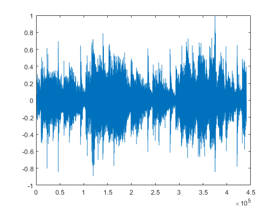
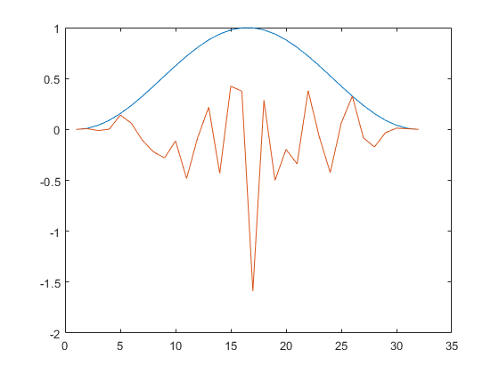
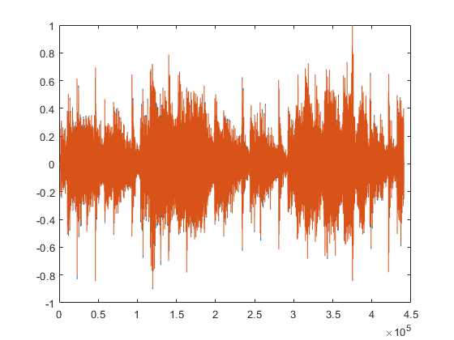
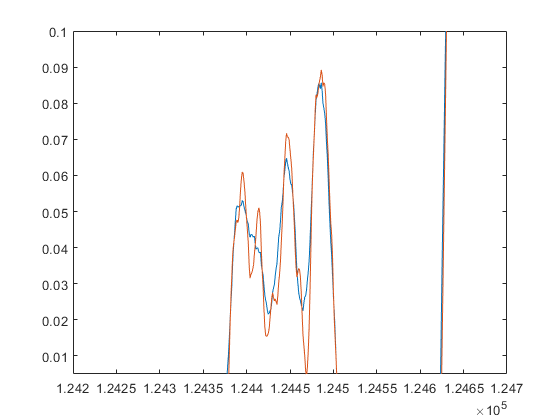
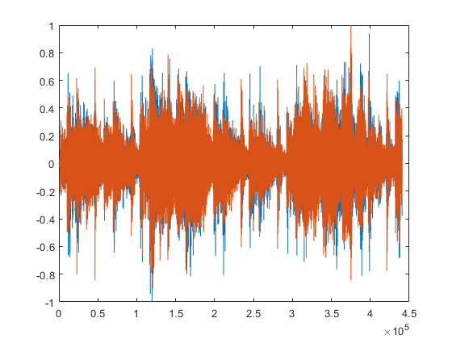
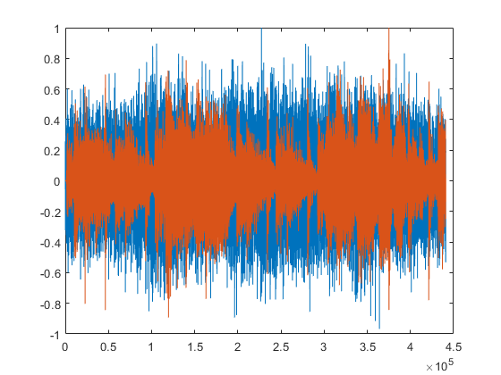
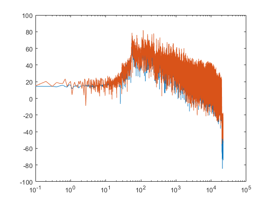

Sharing an idea I had about noise scheduling for audio diffusion. Going about this entirely through intuition so apologies if it's complete bologne. Basically, the premis is what if we split up what's being noised over time. As in, in the earlier steps of noising we're focusing on removing the temporal structure (dynamics) of the signal but retaining the spectral (tonal) structure (or some average of it). Then later in the schedule, once the temporal strcuture has been removed (noised), the tonal strucutre is removed. In this sense, you're compartmentalising the denoising process. So at the beginning of the denoising the net is focused on finding a broad spectral profile, then it moves onto sculpting the dominant dynamic variation, then finally fills that dynamic variation in with what's causing it. I likened this yesterday in a conversation with Zach and CJ to uncovering ruins from under water, vs uncovering ruins by digging them up. If you drain water from the ruins you only find the smallest pieces once nearly all the water has gone. But, if you're digging away at sand you're more likely to find the smaller bits earlier, because you're not going to try and dust off the second story walls when there's still sand covering the first story. But, maybe this is nonsense! Even if this can't be used as is, maybe it'll inspire something else
Starting off with the following reference track for the sake of example
rng(3); % seed random for sake of plots being consistant track = audioread('LargePunchTest\16_122356.wav'); track = track / max(abs(track)); figure plot(track)
Starting off with a short kernel length of 2^5
length = 2^5; noise = randn(length,1); % sample gauss noise % noise = pinknoise(length, 1);
Hann window at the same length as the noise so we can smoothly fade in/out which will have the effect of spreading energy before and after events in the audio
win = hann(length); noise = noise / abs(max(noise)); % normalise range [-1,1] noise = noise .* win; % shape noise kernel with window figure plot(win) hold on plot(noise)
Convolve the example track with the noise and cut out the middle of the convolution result such that we remove the pre/post ringing overhang caused at the top and tail. My immediate concern here is that perhaps learning noise which has been added vs learning noise which has been convolved are too wildly different things(?). Perceptually, they seem very related
noised = conv(track, noise); noised = noised * - 1; % flip polarity of output back to normal overhang = round((size(noise,1) - 1) / 2); noised = noised(overhang+1:overhang+size(track,1)); % cut off the overhang which is a result of the conv noised = noised/max(abs(noised)); % normalise result for CONVenience
Very minor difference in waveforms because short kernel, however if we zoom in we can see some variation at higher frequencies
figure plot(noised) hold on plot(track) audiowrite('shortkernel.wav', noised, 44100); figure plot(noised) hold on plot(track) xlim([1.242e5 1.247e5]) ylim([0.005 0.1]) 
Same again but with longer kernel = more temporal smearing
length = 2^12; noise = randn(length,1); % sample gauss noise % noise = pinknoise(length, 1); win = hann(length); noise = noise / abs(max(noise)); % normalise range [-1,1] noise = noise .* win; % shape noise kernel with window noised = conv(track, noise); noised = noised * - 1; % flip polarity of output back to normal overhang = round((size(noise,1) - 1) / 2); noised = noised(overhang+1:overhang+size(track,1)); % cut off the overhang which is a result of the conv noised = noised/max(abs(noised)); % normalise result for CONVenience % More differnce this time but still easier to hear than to see in the % plot. Listen to how the sharp transients on the string slaps is now % spread because of the phase shuffling audiowrite('midkernel.wav', noised, 44100); figure plot(noised) hold on plot(track)
Same again but with longer kernel again = basically no temporal structure at this point
length = 2^20; noise = randn(length,1); % sample gauss noise % noise = pinknoise(length, 1); win = hann(length); noise = noise / abs(max(noise)); % normalise range [-1,1] noise = noise .* win; % shape noise kernel with window noised = conv(track, noise); noised = noised * - 1; % flip polarity of output back to normal overhang = round((size(noise,1) - 1) / 2); noised = noised(overhang+1:overhang+size(track,1)); % cut off the overhang which is a result of the conv noised = noised/max(abs(noised)); % normalise result for CONVenience audiowrite('longkernel.wav', noised, 44100); % Temporal envelope mostly lost, just a block of sound with similar spectral envelope to input figure plot(noised) hold on plot(track)
If we look at it in terms of frequency domain, there's tonal similarity between the noised signal and the input track. The convolution has mostly just scrambled phases spreading the temporal envelope into one big mass
Xtrack = fft(track); Xnoised = fft(noised); trackMag = abs(Xtrack(1:size(track,1)/2 + 1)); noisedMag = abs(Xnoised(1:size(track,1)/2 + 1)); fbw = (44100/2) / (size(track,1)/2 + 1); % bin width of 1024 point fft at 44100 sample rate fc = 0:fbw:fbw*(size(track,1)/2); % bin freq values figure semilogx(fc, 20*log10(trackMag)) hold on semilogx(fc, 20*log10(noisedMag))
From this point cross fading with noise now will remove spectral structure remaining
finalNoise = randn(441000,1); finalNoise = finalNoise / max(abs(finalNoise)); a = 0.75; b = 1-a; crossFade = noised * a + finalNoise * b; audiowrite('longkernelp75.wav', crossFade, 44100); a = 0.5; b = 1-a; crossFade = noised * a + finalNoise * b; audiowrite('longkernelp50.wav', crossFade, 44100); a = 0.25; b = 1-a; crossFade = noised * a + finalNoise * b; audiowrite('longkernelp25.wav', crossFade, 44100); a = 0; b = 1-a; crossFade = noised * a + finalNoise * b; audiowrite('longkernelp0.wav', crossFade, 44100);